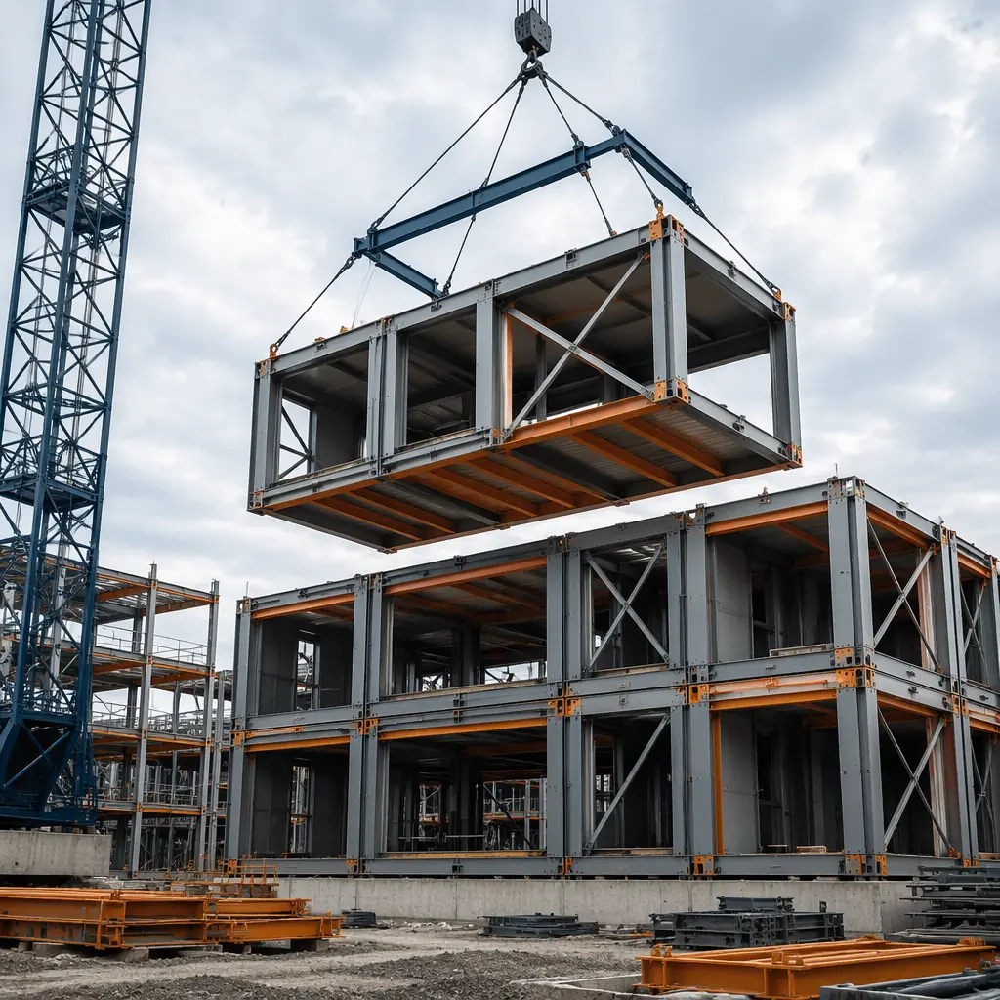
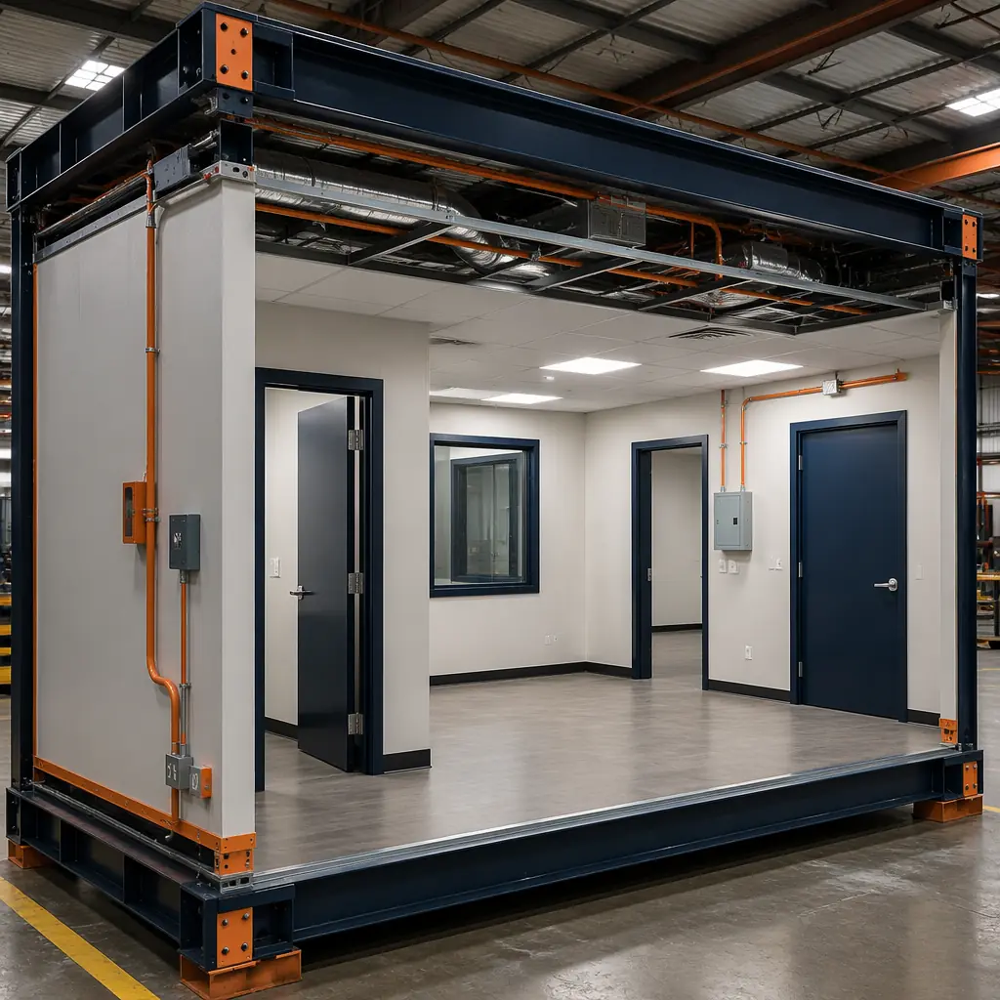

A poorly written RFP is the single largest source of cost overruns and schedule delays in modular construction procurement. When a government agency or commercial developer issues an RFP written for conventional site-built construction, modular manufacturers must either no-bid — eliminating competition — or interpret ambiguous requirements against a building method the spec was never designed to evaluate. The result in either case: higher costs, fewer qualified bidders, and a procurement process that actively selects against the most efficient delivery method available. This guide provides the specification framework, technical language, and evaluation criteria that government and commercial procurement teams need to run a competitive modular RFP that attracts qualified manufacturers and delivers predictable outcomes.

Why Standard RFPs Fail Modular Construction
The core problem is structural: conventional RFPs specify a construction method (masonry, cast-in-place concrete, stick-built framing), while modular is a delivery method that can use any of those materials inside a factory-controlled process. When a modular manufacturer receives an RFP that specifies "on-site concrete pour sequence" or "field-welded steel connections inspected by local jurisdiction," they are being asked to bid a process designed for a method they do not use — even though their finished building meets or exceeds every performance requirement in the spec.
The data bears this out. A 2024 analysis by the Modular Building Institute found that 62% of government RFPs for buildings over 10,000 square feet contained at least one specification clause that inadvertently excluded modular construction, even when the agency had no intention of doing so. The most common exclusionary clauses: mandatory on-site material testing requirements, sequential-phased construction schedules incompatible with parallel factory/site workflows, and prescriptive material specifications that name a specific site-installed product (e.g., "cast-in-place concrete foundation walls") rather than the performance outcome (e.g., "foundation system meeting IBC Chapter 18 with 50-year design life").
The fix is not to write a "modular-only" RFP. It is to write a method-neutral performance specification that describes what the building must do, not how it must be built. This approach has been standard in federal procurement since the 1990s under the Federal Acquisition Regulation (FAR) Part 11, which explicitly requires performance-based specifications unless a design specification is justified in writing. The following sections provide the exact language and evaluation framework to make this work for modular construction.
1. RFP Structure for Modular Procurement
A modular-ready RFP has three structural differences from a conventional construction RFP. Each change removes a barrier that would otherwise disqualify or disadvantage modular bidders.
Scope of Work: Define the Deliverable, Not the Sequence
Conventional RFPs break the scope into sequential phases — site prep → foundation → structure → enclosure → MEP → interiors → commissioning. This sequence assumes all work happens on a single site. A modular project runs two parallel workstreams: factory production (structure, enclosure, MEP rough-in, interior finishes) and site work (foundation, utilities, site infrastructure). The scope must reflect this.
Recommended scope structure:
| Work Package | Scope Description | Location |
|---|---|---|
| WP-1: Site Development | Grading, utilities, foundation system, site infrastructure, module setting & connection | Project site |
| WP-2: Module Production | Steel frame fabrication, enclosure systems, MEP rough-in, interior finishes, factory QC & testing | Manufacturer's factory |
| WP-3: Transport & Installation | Module transport, crane operations, module-to-module connections, MEP interconnections | Route + project site |
| WP-4: Site Finishes & Commissioning | Module-to-module finish work, corridor completion, building envelope seal, systems commissioning | Project site |
This structure lets modular manufacturers price WP-2 at factory efficiency rates while conventional bidders can still bid the project by consolidating all work into site-based packages. Neither method is excluded.
Technical Requirements: Performance Spec, Not Prescriptive Spec
The most important decision in a modular RFP is whether to use performance specifications or prescriptive specifications. The difference determines who bids and at what price.
| Approach | Example Specification | Effect on Modular Bidders |
|---|---|---|
| Prescriptive (avoid) | "Exterior walls: 2×6 wood studs at 16" O.C., R-19 batt insulation, OSB sheathing, Tyvek WRB, fiber cement siding" | Excludes steel-framed modules, continuous insulation systems, factory-applied cladding — forces manufacturer to bid an unfamiliar method or no-bid |
| Performance (recommended) | "Building enclosure: minimum effective R-20 continuous insulation, air leakage ≤ 0.25 CFM/ft² at 75 Pa, STC ≥ 50 at demising walls, 2-hour fire rating at floor assemblies" | Modular manufacturer can use steel frame + continuous insulation + factory-sealed panel system — the method they optimize for, producing a better result at lower cost |
The Federal Acquisition Regulation (FAR 11.002) explicitly states: "Agency requirements shall be stated in terms of functions to be performed, performance required, or essential physical characteristics." For modular procurement, this is not just regulatory compliance — it is the mechanism that unlocks competitive pricing. For a comprehensive look at modular construction cost structures across building types, see our 2026 modular construction cost per square foot pricing guide.
Evaluation Criteria: Weight Quality Over Price for Modular
Modular construction concentrates quality risk in the factory. A low-price modular manufacturer with poor factory QC produces defective modules at scale — 100 identical defects across 100 modules, each requiring site rework that erases the cost advantage. The evaluation criteria must reflect this risk concentration.
Recommended evaluation weighting for modular procurement:
| Evaluation Factor | Weight (Gov) | Weight (Comm) |
|---|---|---|
| Technical Approach — factory QC systems, engineering depth, mock-up quality | 35–40% | 30–35% |
| Past Performance — completed projects of similar type, size, and jurisdiction | 25–30% | 20–25% |
| Price — total project cost including transport, installation, and contingency | 25–30% | 30–35% |
| Schedule — factory production timeline + site installation duration | 5–10% | 10–15% |
Government RFPs: technical approach should carry the highest weight (35–40%) because public procurement rules make it difficult to disqualify a technically-deficient low bidder after award. A heavier technical weight at evaluation is the procurement team's primary risk management tool. For guidance on evaluating modular partners beyond the RFP process, our 10-point modular construction partner evaluation checklist provides the detailed factory audit and reference-check framework.
2. Performance Specification Language for Modular Buildings
The following performance specification language is written to be method-neutral — equally applicable to modular, panelized, and conventional construction — while establishing thresholds that factory-controlled production consistently meets or exceeds. Each section includes the minimum verifiable performance requirement, the applicable standard, and the required documentation for compliance.
Thermal Performance
| Building Element | Minimum Performance | Applicable Standard |
|---|---|---|
| Roof assembly | R-40 continuous insulation | ASHRAE 90.1-2022, Climate Zone 5 |
| Above-grade walls | R-20 effective (continuous insulation or cavity + CI) | ASHRAE 90.1-2022, Table 5.5-5 |
| Floor over unconditioned space | R-30 continuous insulation | IECC 2024, Table C402.1.3 |
| Fenestration (window + frame) | U-factor ≤ 0.30, SHGC ≤ 0.40 | NFRC 100/200 certified |
| Air leakage (whole building) | ≤ 0.25 CFM/ft² at 75 Pa | ASTM E779 or E1827 |
Modular construction has a structural advantage on air leakage: factory-sealed module joints, tested individually before shipping, routinely achieve air leakage rates of 0.10–0.15 CFM/ft² — less than half the code maximum. Our detailed analysis of how modular construction cuts building energy operating costs by 30–50% covers the thermal performance data behind these numbers.
Acoustic Performance
| Assembly Type | Minimum STC | Minimum IIC (floor) | Standard |
|---|---|---|---|
| Demising walls (unit separation) | STC 55 | N/A | ASTM E90 |
| Interior partitions | STC 45 | N/A | ASTM E90 |
| Floor/ceiling assemblies | STC 55 | IIC 55 | ASTM E90, ASTM E492 |
| Mechanical equipment rooms | STC 60 | IIC 60 | ASTM E90, ASTM E492 |
Modular advantage on acoustics: Demising walls in modular construction are inherently double-stud assemblies — each module has its own structural frame, creating a physical gap between units that eliminates the flanking paths common in continuous-frame construction. Factory-installed acoustic sealant at all perimeter joints further reduces sound transmission. Reference the full treatment in our article on modular building acoustic performance and soundproofing standards.
Fire Resistance
- Structural frame: 2-hour fire resistance rating, tested per ASTM E119. Factory-applied intumescent coating or gypsum board encapsulation, with UL/ULC-listed assembly number provided at bid.
- Floor assemblies: 2-hour fire resistance rating, including module-to-module floor joints. Through-penetration firestop systems at all MEP penetrations, tested per ASTM E814.
- Exterior walls: Compliance with IBC Table 602 fire separation distance requirements. Non-combustible cladding or fire-retardant-treated materials where required by proximity to property lines.
- Module joints: Fire-rated joint systems at all module-to-module interfaces, tested per ASTM E1966 (fire-resistive joint systems). This is the most frequently overlooked specification in modular RFPs, and the most common source of fire code non-compliance in modular projects built under conventional specs.
For a complete treatment of fire safety in modular buildings, including assembly testing requirements and passive protection strategies, see our comprehensive guide to modular construction fire safety and code compliance.
Seismic Performance
Modular steel-frame buildings have inherent seismic advantages: ductile steel connections, lower mass than equivalent concrete structures, and regularly-spaced bolted connections that distribute seismic forces predictably. The specification should reference ASCE 7-22 Chapter 15 (non-building structures similar to buildings) and require:
- Seismic Design Category per site-specific geotechnical report (minimum SDC D in high-seismic zones per USGS maps)
- Module-to-module connections designed for amplified seismic forces per ASCE 7-22 Section 15.3, with documented connection capacity exceeding demand by minimum 1.2× safety factor
- Factory-welded moment frames or braced frames within each module, with certified welder qualification records (AWS D1.1 or D1.8) submitted at bid
- Module-to-foundation anchorage designed for seismic overturning forces, with post-installed anchors tested per ACI 355.4
Our detailed engineering analysis of modular seismic design using ductile steel connections provides the technical background behind these specification requirements.
3. Module Transport Constraints — The Specification Most RFPs Miss
Module transport is the single most consequential constraint on modular building design, and the specification most frequently absent from RFPs. If the RFP does not define transport limits, manufacturers will bid different assumptions — and the low bidder is often the one who assumed the most permissive transport envelope, which may not be achievable on the actual route.
Standard module transport limits (no escort):
- Width: 4.27 m (14 ft) — permit required above 3.05 m (10 ft) in most US states; escort vehicle required above 4.27 m
- Length: 16.15 m (53 ft) — standard semi-trailer limit; modules up to 22.86 m (75 ft) possible with specialized extendable trailers and route-specific permits
- Height: 4.27 m (14 ft) loaded height (module + trailer deck) — above this requires route survey for bridge clearance, overhead utilities
- Weight: 36,000 kg (80,000 lb) gross vehicle weight including trailer — module net weight typically 15,000–25,000 kg depending on size and fit-out level
RFP requirements for transport:
- Route survey: Bidder shall conduct a route survey from factory to project site, identifying all bridge weight limits, overhead clearance restrictions (< 5.0 m vertical clearance), turning radii (< 15 m), and road weight restrictions. Route survey report with annotated Google Earth/Maps path shall be submitted with bid.
- Module dimensions: Bidder shall specify maximum module width, length, height (including trailer), and weight for the proposed design. Dimensions must account for 75 mm (3 in) of protective wrapping on all faces.
- Permit strategy: Bidder shall identify all required transport permits (state DOT, municipal, police escort) and include permit lead times in the project schedule. State DOT oversize permits typically require 2–4 weeks; route-specific permits for extreme dimensions (> 5.5 m wide, > 30 m long) can require 8–12 weeks.
- Site access: Bidder shall verify that the project site access route accommodates the largest module delivery vehicle, including crane staging area and module laydown/staging zone. Minimum crane pad: 15 m × 30 m compacted area rated for crane outrigger loads (typically 100–300 kN per outrigger).
Modules exceeding 16 ft (4.88 m) in width trigger mandatory escort vehicles in all 50 states and require detailed route-specific permitting. If the project requires larger modules, the RFP should explicitly state "Oversize module transport permitted: maximum width [X] ft, subject to bidder's route survey and permit acquisition" — otherwise manufacturers will default to the standard 14 ft envelope and the design team will receive modules smaller than expected. For a complete treatment of the logistics dimension, see our guide to modular construction transportation and logistics planning.
4. Quality Assurance Requirements — Factory Audit Rights and MOCK-UP Mandate

Factory quality control is where modular construction either delivers its 50% schedule advantage or generates 100 repetitive defects that erase it. The RFP must establish QA requirements that give the procurement team visibility into the factory before modules arrive on site — after which leverage to fix problems diminishes sharply.
Required Quality Systems
| Requirement | Standard | Evidence at Bid |
|---|---|---|
| Quality management system | ISO 9001:2015 (current, not expired) | Copy of certificate with expiry date |
| Modular construction standard | ICC/MBI 1200 (planning/design) & 1205 (inspection/compliance) | Statement of conformance |
| Welding certification | AWS D1.1 or D1.8, welder qualification within 12 months | WPS/PQR documentation, welder certs |
| In-line QC inspection plan | Inspection hold points at: framing complete → MEP rough-in → drywall close → finish | Sample ITP (Inspection & Test Plan) from previous project |
| Third-party inspection | Independent inspection agency retained by owner | Bidder acknowledgment of access |
ICC/MBI 1200 and 1205 are the definitive standards for modular construction in the United States. ICC/MBI 1200-2021 governs the planning, design, fabrication, and assembly process. ICC/MBI 1205-2021 governs inspection, testing, and compliance verification. Procurement teams should reference both standards by number and require manufacturer conformance statements. These standards are recognized by the International Code Council and are referenced in the GSA PBS-P100 Facilities Standards (Section 1.7, Off-Site Construction).
Factory Inspection Rights
The RFP must include these access provisions, ideally as contract clauses that survive award:
- Pre-production audit: Owner and owner's representatives shall have the right to inspect the manufacturing facility within 30 days of contract award, prior to commencement of module production. Audit scope includes: production line configuration, material storage conditions, welding stations, QC hold points, and completed module staging area.
- In-process inspection: Owner's third-party inspector shall have unrestricted access to the factory floor during production hours. Inspector may witness any QC hold point, review QC records, and photograph module conditions. Manufacturer shall provide an escort and safety PPE.
- Pre-shipment inspection: Each module shall be inspected at the factory prior to shipment. A module inspection report (MIR) documenting QC hold-point signoffs, dimensional verification, and defect resolution shall be signed by both manufacturer QC and owner's inspector before the module is released for transport.
MOCK-UP Module Requirement
This is non-negotiable for projects of 50+ modules. A mock-up module — fully completed with all finishes, MEP fixtures, doors, windows, and casework — must be approved by the owner before full production begins. The mock-up serves as the quality benchmark against which all production modules are judged. Schedule the mock-up as a contract milestone with 5–10 working days for owner review and sign-off. If the manufacturer proposes skipping or combining the mock-up with the first production module, decline. A first-production-module-based approval means discovering quality issues after 10–20 modules are already in production — with 10–20 times the rework cost.
On a 160-module government office project in the Midwest, the mock-up review identified inconsistent drywall finish at module joints, MEP rough-in clashes in 3 locations, and door hardware misalignment against the architectural spec. Each issue was corrected in the production process before a single production module was built. Total mock-up cost: approximately $45,000. Estimated rework cost if discovered during installation: $320,000 and 6 weeks of schedule delay.
For a detailed walkthrough of factory production quality systems, including the inspection gate process that separates top-tier manufacturers from the rest, see our analysis of modular construction factory QC systems and in-line inspection protocols.
5. Schedule, Milestones & Liquidated Damages
Modular construction's schedule advantage — 30–50% faster than site-built — disappears if the contract does not enforce factory milestones with equivalent rigor to site milestones. A conventional RFP that liquidates damages only for site completion incentivizes the manufacturer to delay factory production (where no damages apply) and compress site installation (where they do). The schedule must be structured to hold both workstreams accountable.
Recommended modular milestone structure with liquidated damages:
| # | Milestone | LD Trigger | Typical LD Rate |
|---|---|---|---|
| M1 | Shop drawings approved | Delay in factory start | $500–1,000/day |
| M2 | Mock-up module approved | Delay in production start | $1,000–2,000/day |
| M3 | First module shipped | Factory production delay | $2,000–3,000/day |
| M4 | Last module shipped | Production completion delay | $3,000–5,000/day |
| M5 | Substantial completion | Overall project delay | $5,000–10,000/day or 0.1% of contract value/day |
Key schedule risks to address in the RFP:
- Permitting delays: Modular projects often require dual permitting — factory certification (state industrial program or third-party agency) and local building permit. Delays in either track delay the entire project. The RFP should require the manufacturer to identify their permitting jurisdiction for factory approval and demonstrate a track record of permit approvals within 30–45 days. For more on the dual permitting process, see our guide to modular construction permitting and zoning compliance.
- Weather windows: Module setting requires crane operations with wind limits (typically 30–35 km/h sustained). The schedule should include seasonal weather risk buffers: 10–15% additional days for winter installations in northern climates, 5–10% for summer installations in hurricane-prone regions.
- Force majeure distinction: Specify that supplier material delays do not constitute force majeure unless the material is sole-source and the delay is industry-wide. Modular manufacturers with diversified supply chains (a key evaluation criterion) should have no excuse for single-supplier delays.
6. The 12-Point Modular RFP Specification Checklist

Before issuing your RFP, verify each of the following 12 items. A "No" on any item means the RFP will either exclude qualified modular bidders or produce bids that are not comparable across manufacturers.
| # | Checklist Item | Status |
|---|---|---|
| 1 | Scope is structured as work packages (site, factory, transport, finish) rather than sequential construction phases | ☐ |
| 2 | All technical requirements are expressed as performance outcomes (R-value, STC, fire rating) rather than prescriptive material/method specifications | ☐ |
| 3 | Evaluation criteria weight technical approach (30–40%) above or equal to price (25–35%) | ☐ |
| 4 | Module transport constraints specified: max width, length, height, weight, route survey required at bid | ☐ |
| 5 | ICC/MBI 1200 and 1205 standards referenced by number with conformance statement required | ☐ |
| 6 | Factory audit rights (pre-production, in-process, pre-shipment) included as contract clauses | ☐ |
| 7 | Mock-up module required as contract milestone with owner approval before full production | ☐ |
| 8 | Liquidated damages applied to factory milestones (shop drawings, mock-up, first/last shipment) not just site completion | ☐ |
| 9 | Warranty requirements specified: minimum 10-year structural, 5-year building envelope, 2-year MEP and finishes | ☐ |
| 10 | Third-party inspection access defined: owner may retain independent inspector with unrestricted factory floor access | ☐ |
| 11 | GSA PBS-P100 compliance required for federal projects (Section 1.7, Off-Site Construction) with documentation | ☐ |
| 12 | Design flexibility provisions: RFP allows manufacturer-proposed value engineering and module optimization within performance envelope | ☐ |
7. Government Modular RFP Case Studies
Several U.S. federal agencies have developed modular procurement frameworks that serve as models for government RFPs at all levels. These programs demonstrate what works when modular procurement is structured correctly.
GSA PBS-P100: The Federal Standard
The U.S. General Services Administration's PBS-P100 Facilities Standards for the Public Buildings Service (2024 edition) includes Section 1.7, "Off-Site Construction," which explicitly recognizes modular, panelized, and volumetric construction as approved delivery methods for federal buildings. Key provisions:
- Performance specifications are the default for all federal building procurement (FAR 11.002 implementation)
- ICC/MBI 1200 and 1205 are recognized as design and inspection standards for modular federal buildings
- Factory quality control plans must be submitted and approved as a condition of contract award
- Third-party inspection is mandated: modular manufacturers must accept inspection by GSA representatives or designated third-party agencies
- The standard explicitly permits value engineering proposals that optimize module sizes for factory production and transport efficiency
DOD Unified Facilities Criteria (UFC 1-200-02)
The Department of Defense has been the largest U.S. adopter of modular construction at scale. UFC 1-200-02 High Performance and Sustainable Building Requirements references modular construction as an approved method for barracks, administrative facilities, and medical buildings. Key lessons from DOD modular procurement:
- Standardized designs: DOD uses standardized facility designs adapted for modular delivery, which reduces design cost and procurement time by 40–60% compared to custom designs
- Multi-year IDIQ contracts: Indefinite Delivery/Indefinite Quantity contracts with pre-qualified modular manufacturers reduce per-project procurement time from 12–18 months to 3–4 months, since the manufacturer qualification is done once at the IDIQ level
- Performance bonding: DOD requires 100% performance and payment bonds for modular projects, which effectively screens for financially stable manufacturers — manufacturers that cannot bond at the project value are not qualified to bid
HUD Modular Housing Procurement
The U.S. Department of Housing and Urban Development's modular housing programs have demonstrated that competitive modular procurement works at the municipal scale. HUD-funded projects in Los Angeles, Seattle, and Denver using performance-based RFPs achieved:
- Average 3.6 qualified bidders per RFP (vs. 1.7 for prescriptive RFPs)
- Average bid spread of 12% between highest and lowest qualified bidder (vs. 28% for prescriptive RFPs, where one modular and one conventional bidder produce wildly different numbers)
- Average project delivery time of 14 months from RFP issuance to occupancy (vs. 26 months for comparable site-built projects procured under conventional RFPs)
The common thread across all three programs: performance specifications, pre-qualification of manufacturers based on factory capability, and separate evaluation of technical merit and price. For a detailed look at how modular construction serves government and municipal building programs, see our guide to modular government and municipal building construction.
8. Common RFP Pitfalls That Exclude Modular Bidders
Even well-intentioned RFPs often contain language that inadvertently eliminates modular manufacturers from consideration. The following clauses appear routinely in government and commercial RFPs and should be removed or rewritten if modular competition is desired:
| Problem Clause | Why It Excludes Modular | Replacement Language |
|---|---|---|
| "All construction work shall be performed on-site" | Directly excludes factory production — the core of modular delivery | "Construction may be performed in a factory-controlled environment or on-site, subject to the QA/QC requirements in Section [X]" |
| "Bidder must hold general contractor license in [state]" | Modular manufacturers typically hold factory certifications, not GC licenses. They partner with licensed GCs for site work | "Bidder or bidder's designated site installation subcontractor must hold general contractor license in [state]" |
| "Local building official shall inspect all structural framing" | Modular factory production is inspected by state industrial program or approved third-party agency, not the local jurisdiction at the project site | "Structural framing inspection: factory-produced modules shall be inspected per ICC/MBI 1205 by an approved third-party inspection agency. Site-installed work shall be inspected by local building official" |
| "Waterproofing shall be field-applied after framing complete" | Factory-applied building wrap and flashing, installed under controlled conditions, produces more reliable results but doesn't meet "field-applied" language | "Weather-resistive barrier shall meet ASTM E1677 requirements. Factory or field application is acceptable; factory application shall include module-joint sealing procedure" |
| "Substantial completion shall occur no later than 365 calendar days from Notice to Proceed" | Not inherently exclusionary, but if the schedule is based on site-built sequencing, the 365 days may be unachievable through either method. Modular needs 30-50% less total duration | Let the schedule be set by bidders: "Bidder shall propose a project schedule with milestones per Section [X]. Schedule duration is an evaluation criterion (see Section [Y])" |
The most reliable test: send a draft RFP to 2–3 modular manufacturers for review before issuing it. Ask one question: "Is there anything in this document that would prevent you from bidding, or that would force you to bid a conventional approach instead of a modular one?" The answer will surface issues that no checklist catches — jurisdiction-specific licensing requirements, local amendment conflicts, or insurance/bonding thresholds set at conventional-construction levels that modular manufacturers don't routinely carry. For a complete understanding of how modular construction insurance and risk profiles differ from conventional construction, see our guide to modular construction insurance and risk management.
Building a Procurement Process That Works
Writing a modular-ready RFP is not about favoring one construction method over another. It is about removing the accidental barriers that make modular manufacturers no-bid or submit non-competitive proposals designed for a building method they don't use. The principles are straightforward: specify performance, not materials and methods. Structure scope to reflect parallel factory/site workstreams. Weight technical quality above or equal to price to protect against the low-bid-low-quality trap. Require factory access and mock-up approval as risk management tools. Anchor specifications to ICC/MBI 1200/1205 and GSA PBS-P100 so manufacturers are working against standards designed for modular construction.
When these principles are applied, the result is an RFP that attracts 3–5 qualified modular bidders, produces comparable proposals with a tight bid spread, and delivers buildings faster and at lower total project cost than conventional procurement. The specification language in this guide provides the starting point. For specific building types, our in-depth guides cover the unique procurement considerations: multifamily modular apartments, modular hospital construction, modular office buildings, and turnkey modular delivery from design through handover. Each includes building-type-specific specification language that extends the framework above.
Need procurement support for your next modular construction project? Contact MODURA's engineering team for RFP review, specification language templates, and pre-bid technical briefings tailored to your project type and jurisdiction.